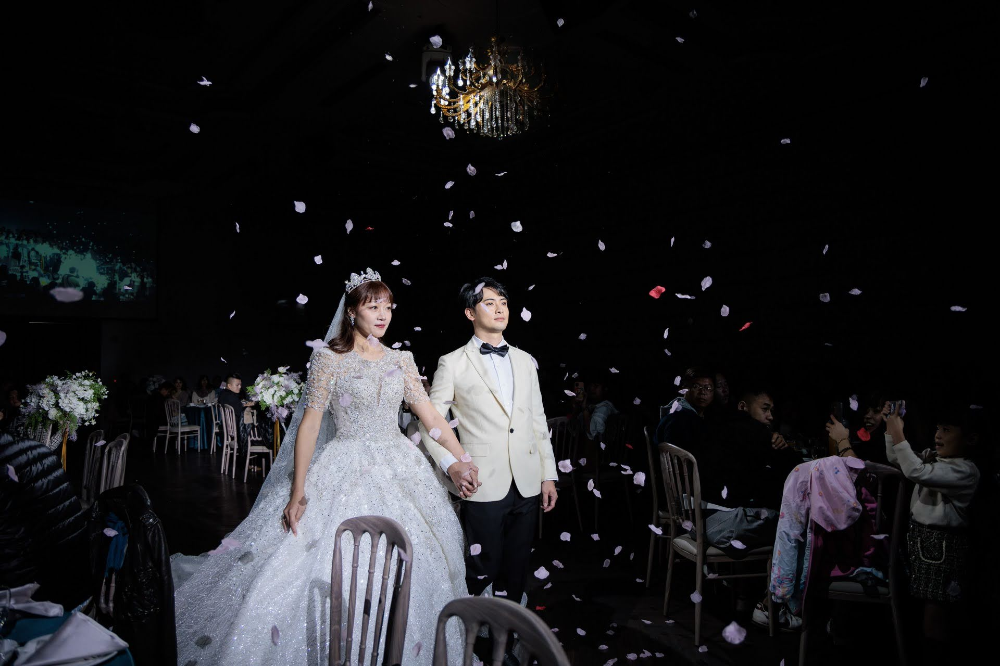

RE STUDIO · SINCE 2016
婚禮記錄精選輯訂婚・迎娶・證婚・宴客
那一天最動人的畫面，交由我們為您捕捉。
我們以紀實的方式記錄婚禮。那一天，您忙著感動、忙著笑，身在其中，很難看見全貌。我們站在一旁，用鏡頭替您記下那些自己看不到的角度：梳化時的笑容、拜別時泛紅的眼眶、揮汗闖關的熱鬧。
您經歷的，是那一天；
我們留下的，是您沒能看見的那一面。
飯店迎娶
從清晨的梳化開始，伴郎闖關、新人拜別父母，一路記錄到晚宴上舉杯的家人。
老家迎娶
在老家客廳與巷口完成迎娶。熱鬧的兄弟團、姊妹淘，和出門前那一個捨不得放開的擁抱。
戶外證婚
午後在花拱門下交換誓詞，入夜後在燈光與花瓣裡進場。同一天，兩種完全不同的光。
傳統迎娶
撐米篩、上禮車、擲扇。每一個傳統習俗，都是長輩的心意，也都值得被好好留下來。
中式訂婚
一身龍鳳褂，奉甜茶、戴金飾。刺繡的紋理、戒指上的光，細節都是故事的一部分。
把您的那一天，交給我們記錄。
歡迎告訴我們婚期、地點與儀式安排，我們會回覆檔期與拍攝方案。
填寫預約表單
表單會在新分頁開啟。請填寫婚期、儀式類型（訂婚／迎娶／證婚／宴客）與地點。